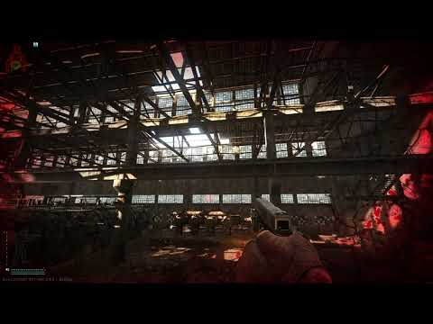

Bowen's Voice
- Downloads
- 2,832
- Favourites
- 2
- Mod lists
- 6
Somehow, Some way, I’ve fallen into the THE CITY region. Now I gotta escape.
This mod took a few months off my life.
This is a simple voice mod, voiced by me, Livi!
Including over 600 voice lines, most of which are copies of the ones your regular USEC voices would say, save for some faithful additions.
The entire voice pack is lore-friendly. I tried not to create something too wild to hear in a video game that tries to be serious.
Applicable to both USEC and BEAR factions.
IT IS NOT APPLIED TO BOTS
yet… ((Its close)) (((I promise maybe)))
And to anyone else using this mod, thank you for letting me yell in your raids!
How To Install:
Extract the SPT folder into your SPT install folder.
If prompted to overwrite existing files, say yes.

How To Use:
Simply select the “Bowen” voice under the in-game settings menu, inside the Sounds tab.
Or (if you’re using the WTT - Head and Voice Selector) you can change it by going to your stash - Character (Tab in the top left) - And selecting the drop down for your voice underneath the character preview model.

Almost every single voice line from the vanilla games’ voices are recreated. Some were withheld from addition - due to not being implemented in the actual game yet, like mortar fire, Sonar callouts ETC.
This took me approximately 12 hours to create from scratch,
Ripping the base Usec_3 sounds (josh)
Copying every single voice (Even the unused ones)
Naming them properly
I am not counting the time it took to figure out unity, this is the first time I have really touched it, and the lurning curve is steep.
If you have found a voice is
1. Poor in quality
2. missing/Bugged
3. In general doesn’t sound right
Contact me here, or in the WTT / SPT discord,
My handle is Livi
*If you want me to add a voice line, or make some for you - I am more than happy to. Same as above, contact me wherever and I’ll get back with you.
HUGE Shoutout toGrooveypenguinX AND rockahorse - for both dealing with me being a massive idiot with Unity, troubleshooting with me, for Groovey’s VoiceAdderMod
Version
2.0.0
Happy Holidays, Everyone!
Updated to 4.X!
Thank you GrooveypenguinX for helping me figure out proper .dll procedures. <3
Dependencies
Version
1.1.11
- Updated to the most recent version of SPT, 3.11!
There are some snippets in here for work with the hopeful addition of bots having the voice as well, its currently not functioning, but maybe I can figure it out in the future. Still going to release this, as it works with the player just like all previous editions.
Version
1.1.10
1.1.10
- Happy new year! Bowen’s Voice is now compatible with 3.10.X!
(MASSIVE thanks to the WTT folks, namely Turbozoroger, EpicRangeTime, bushtail, ItsReaperGirl?, and mostly, GrooveyPenguinX! you guys are incredible!)
Version
1.1.0
Welcome to 3.9.x!
(Finally) Updated to support 3.9.x officially! Sorry for the wait!
- Adjusted some volume levels for voicelines, namely, out of stamina and badly hurt.
- Cleaned up some voicelines to fix some aweful background noise.
Thanks so much for using my mod! Feedback is welcome, read, and encouraged.